Designing digital tools to help empower teachers, school leaders, and young people with data and educational experiences
The Chan Zuckerberg Initiative's education team, focused on advancing personalized learning, required product solutions that would integrate data-driven insights into educational strategies for middle and high schools across the nation.
- 30% increase in data drill-down usage during back to school
- 3 surfaces across the platform adopted the design system
- 300 schools using the Summit Learning platform
For Context
We built ed tech tools for Summit Learning, a personalized, project-based instructional model live in public and charter schools nationwide. For students, it delivers personalized curriculum through projects and self-paced focus areas. For teachers and school leaders, it gives them visibility into student performance.
My team built dashboards that turned that data into insight: principals, school leaders, and teachers could open them and see, at a glance, who was on track, who was struggling, and where to step in that week, turning a semester's worth of lagging indicators into a weekly signal.
That weekly signal only became useful in the hands of a coach—the data wasn't yet quickly discernable, so neither were the actions. That's the Summit Success Manager, embedded with each partner school, meeting with leaders on a regular cadence, walking through the data together, building an actual plan for who needs support, what's working, and what to adjust before it's too late. Our team functioned as the growth product for the platform, working in tight partnership with SSMs to evolve the tools alongside the people using them. All of their coaching sessions, excel workarounds they'd built to fill a gap, teacher and school leader feedback—it all guided what we shipped next. Sixteen SSMs across 300 schools meant constant signal on where the platform needed to go.
My first move was leading the team through a visioning phase grounded in direct evidence: I audited the tools SSMs actually used, ran workshops with SSM teams, and aligned the whole group (data science, PM, engineering, content, and research) on what "impactful" actually meant from an experience, value, and design perspective before any wireframes were drawn. The roadmap, the opportunity areas, the whole sequencing that followed were all downstream of that first workshop.
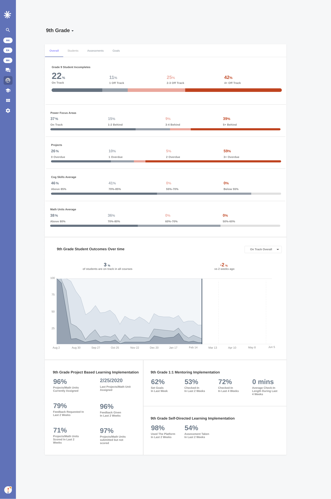
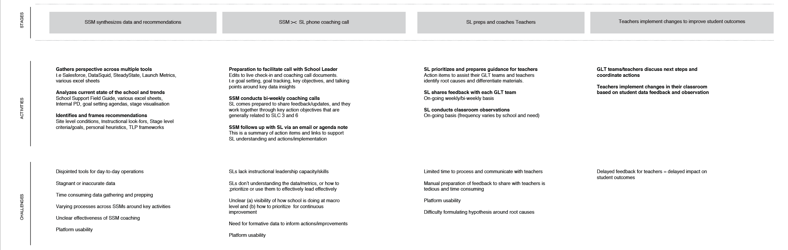
The Unglamorous Work
What followed was a semester of unglamorous but necessary groundwork. The first cross-functional project was aligning platform language to platform actions—and to how school leaders and SSMs actually understood what was happening. A metric literally labeled "Projects Currently Assigned" meant something else entirely by the time an SSM had to explain it live, and that was the pattern everywhere: confusing names, labels that shifted from page to page, titles that could belong to any page on the site.
We looked at how Google and the New York Times handled their COVID dashboards: plain metric names, a linked "about this data" note, a tooltip instead of a phone call. We shipped renamed metrics, real page titles, and inline tooltips in a matter of weeks. Small, but it meant a school leader could know what a number meant without waiting for their next SSM call.
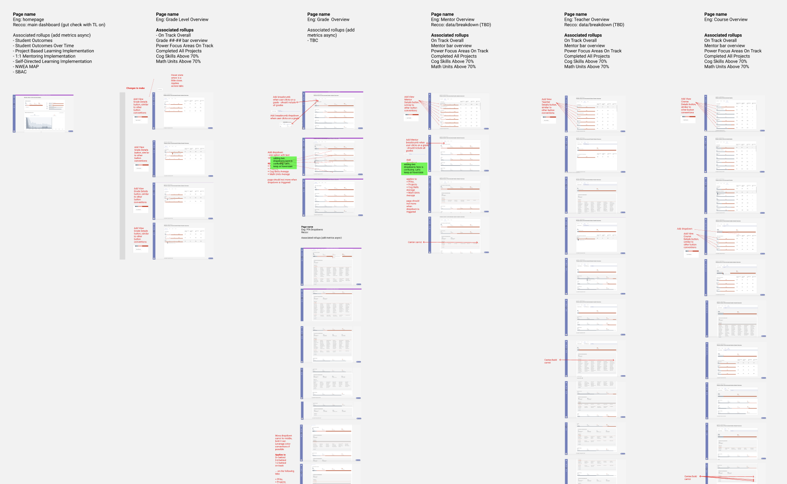
In parallel we mapped the ecosystem end to end, everything inside the platform and everything an SSM was doing around it, and turned that into a shared language for the whole team. We built a cadence for research, design, and engineering to work together. And we spent real time with stakeholders, making the case for why this work mattered and what it would take, so by the time we got to the bigger swings (the dashboard redesign) the team had credibility and a tempo behind it.
Prioritization
After the visioning work gave us a long list of concepts and features, I needed a shared and objective way to show the tradeoffs across all of them. I built a prioritization matrix, plotting complexity to build against how much process change each concept demanded from School Leaders and SSMs, and ran it as a live working session where the team plotted their own concepts on it together. By the time we mapped the R&D and data science work alongside the platform concepts, the team had a shared, defensible logic for what to build first, what needed more research before it could even be scoped, and what was genuinely a bigger bet.
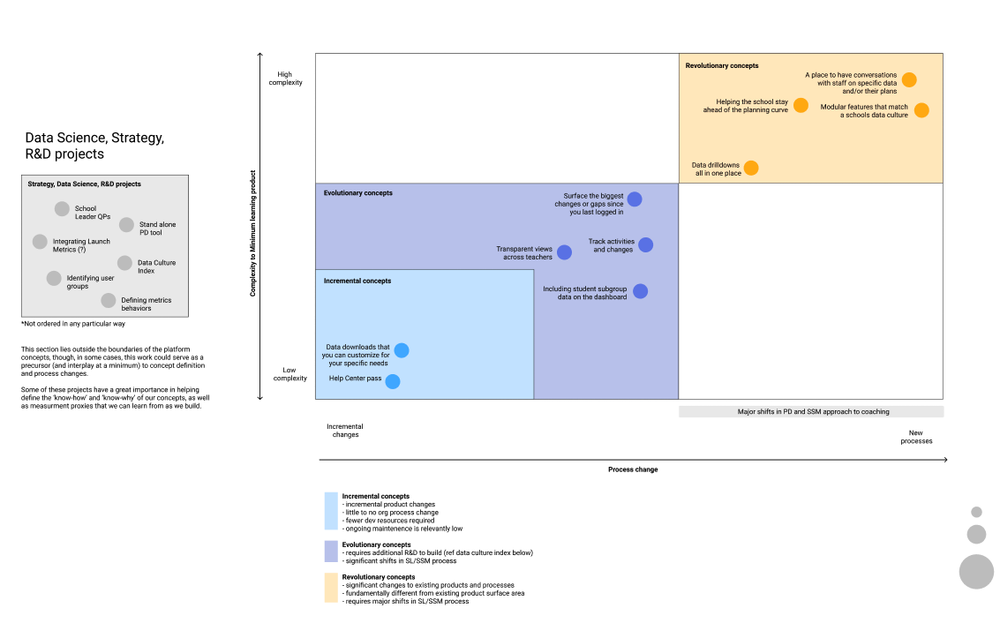
School Leader Dashboard Redesign
What changed in the first pass
- Unified navigation: one nav bar across the whole product (Homepage, Grade Level, Teachers, Mentor, Course). Same five destinations regardless of school or role.
- Single source of truth: one single Site Level Overview per school, replacing scattered grade-level pages.
- Data freshness indicator: a last-synced timestamp so school leaders could trust the numbers were current.
- Graceful transition: a Legacy/Pilot toggle so users could move between old and new systems instead of having it swapped out from under them.
- Drill-down structure: View Details buttons on every card, giving school leaders a path from summary to specifics.
The whole arc ran through three layers: get the content right, get the structure right, then get the visual system right so the structure actually reads.
What I inherited: a single grade-level page with tabs for Overall, Students, Assessments, Goals. Five near-identical stat blocks stacked one after another. A color logic that meant "on-track" in one section and nothing in particular in the next. Cog Skills and Math Units left their worst bucket gray instead of red. One static chart with no way to filter. PBL, Mentoring, and Self-Directed Learning as raw stat panels with no drill-down.
All the right data existed. It just sat there in a flat list, with nothing telling a school leader where to start. That first pass shipped with every card still reading a placeholder 28%, proof the structure had to hold before a single pixel got designed.
The design system pass
This is where the numbers finally get told what they mean.
What the visual system introduced
- Meaningful color bars: each stat tile picks up a four-segment bar, green to red, so a school leader reads severity at a glance instead of doing the math across four percentages.
- Trend chips: an arrow and a color, "↑10% vs last week," doing double duty as both the delta and the judgment call on whether that's good news.
- Labeled line chart: multi-line view with a hover tooltip breaking down one exact date: "Oct. 11th: 10% 4+ Off Track, 40% Off Track, 20% On Track, 30% Very On Track."
- Explicit axis key: spelling out what the percentage is a percentage of: 215 students, monthly. A direct answer to "SLs need help understanding the data."
- Typography hierarchy: eyebrow label, bold title, uppercase micro-labels. Consistent across every tile.
The color bars, the trend chips, the tile pattern, the chart and tooltip spec: all of it got pulled out as the shared design system and rebuilt into Grade Level, Teacher, Mentor, and Course, and eventually into surface areas well outside School and District Tools.
I led the redesign and owned the design system end to end: the color tokens, the type scale, the card and tile patterns, the chart and tooltip spec, then partnered with engineering to turn all of it into a shared component library the rest of the design org could build from instead of reinventing it project by project. This effort ended up doubling as the pilot for standardizing design system elements across the whole platform.
I ran user testing alongside Research to validate the redesign with school leaders before anything shipped, and built interactive prototypes to pressure-test navigation and drill-down flows ahead of engineering investment. The harder part of the job was less about any single deliverable and more about keeping data science's definition of the metrics, content strategy's language, and engineering's build in sync with one coherent experience, catching the moments where a technically correct call in one discipline would have confused a school leader in another.
The Impact
Within the first weeks back to school, data drill-down usage increased 30%. School leaders were navigating from summary to student-level data on their own, without an SSM walking them there first. The dashboard's return pattern shifted from one-time visits to weekly cadence, aligned with SSM coaching calls.
The design system we built (color tokens, type scale, component patterns) was adopted by three other product surface areas across the platform, with designers from other teams building on the foundation I created. It later became the pilot for standardizing design elements across the entire platform.
Key Flows
Making data legible at a glance
Discovery told us school leaders needed an SSM to interpret the data. These interactions put the answer in the interface itself.
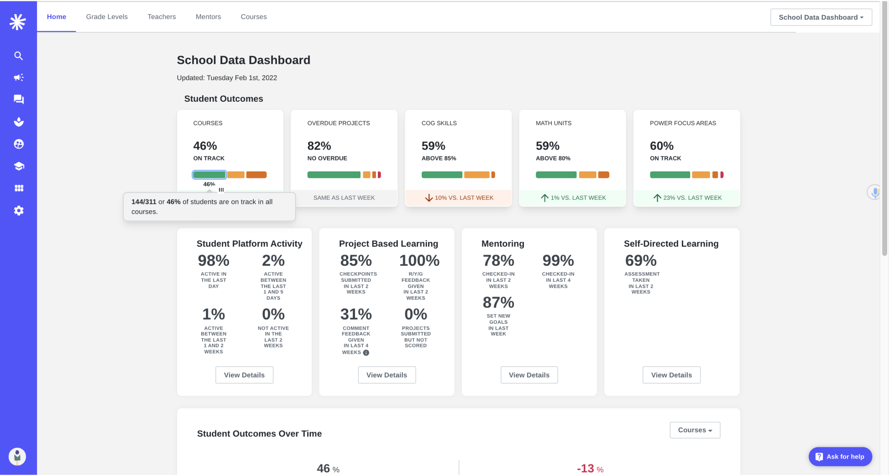
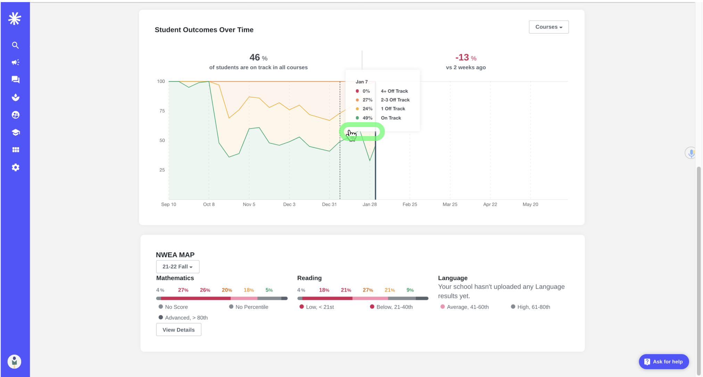
From summary to action
Drill-down went from a rare action to a routine one. This is the path: school-level → category → individual.
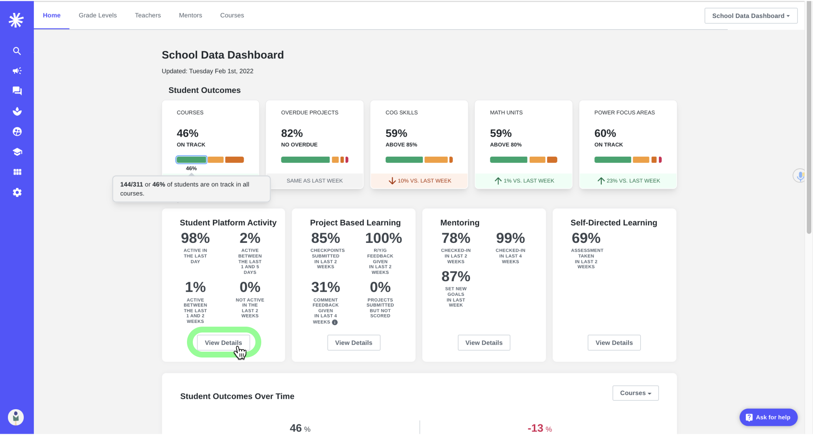
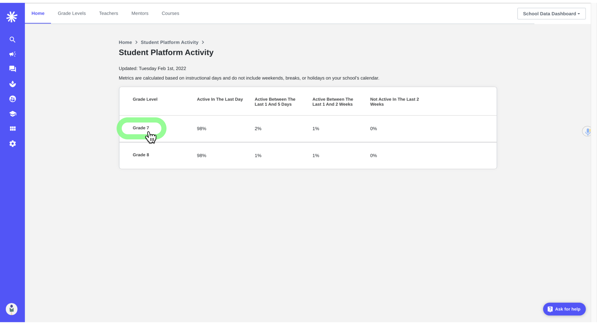
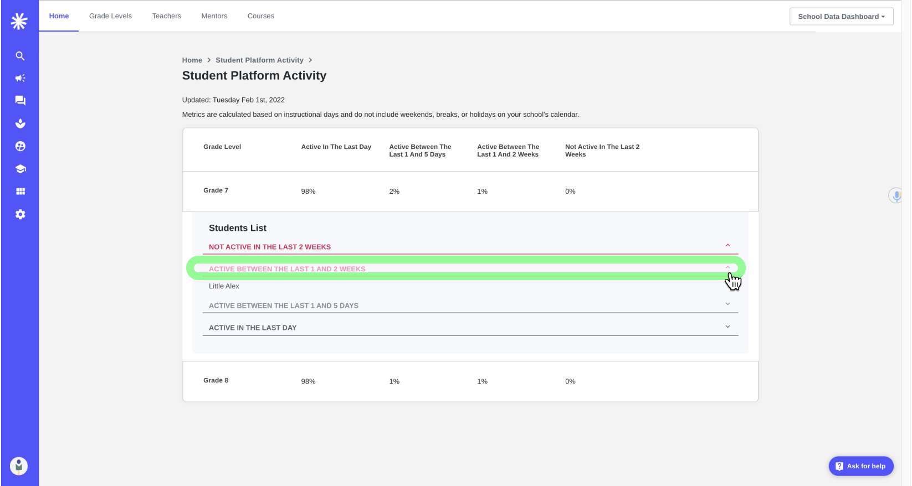
Custom student groupings
Teachers think in periods, sections, intervention groups, not grade-level aggregates. This flow lets them create views that match how they actually organize their classroom.
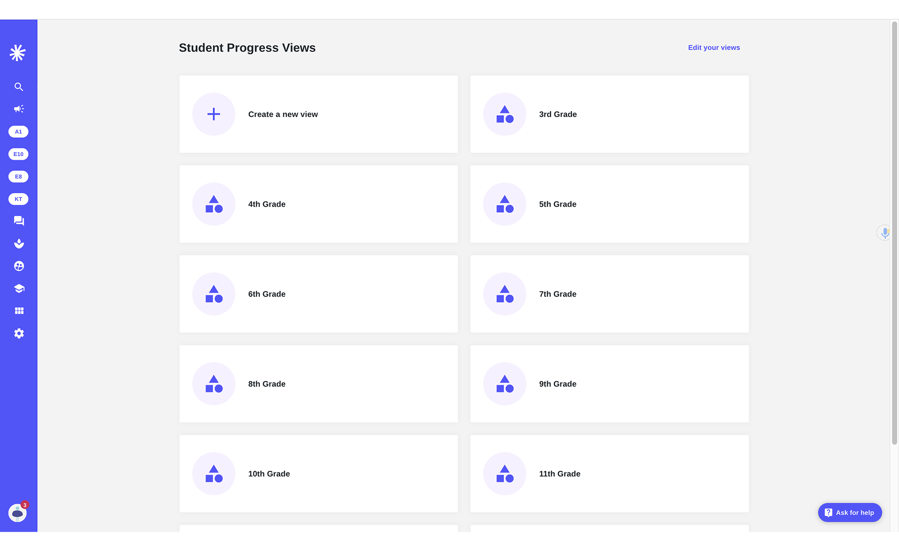
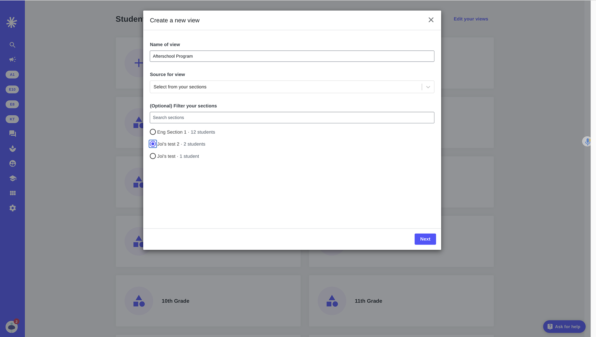
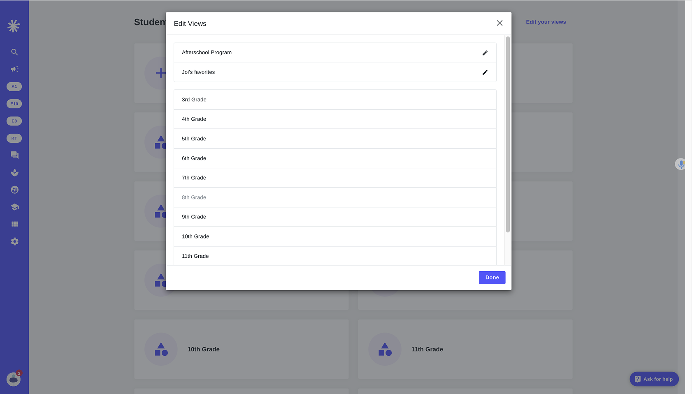
Building views from individual students
Sections cover the common case, but some groups exist outside any roster: a reading intervention cohort, students flagged in last week's data review, the six kids a counselor is tracking. This flow lets teachers hand-pick students across grades and sections to build a view that exists nowhere else in the system.
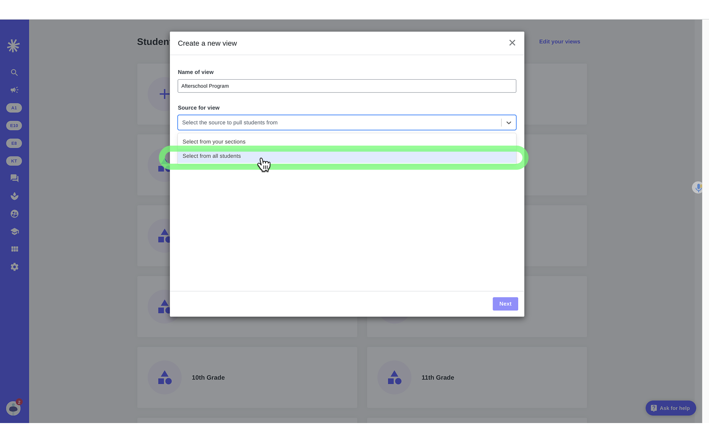
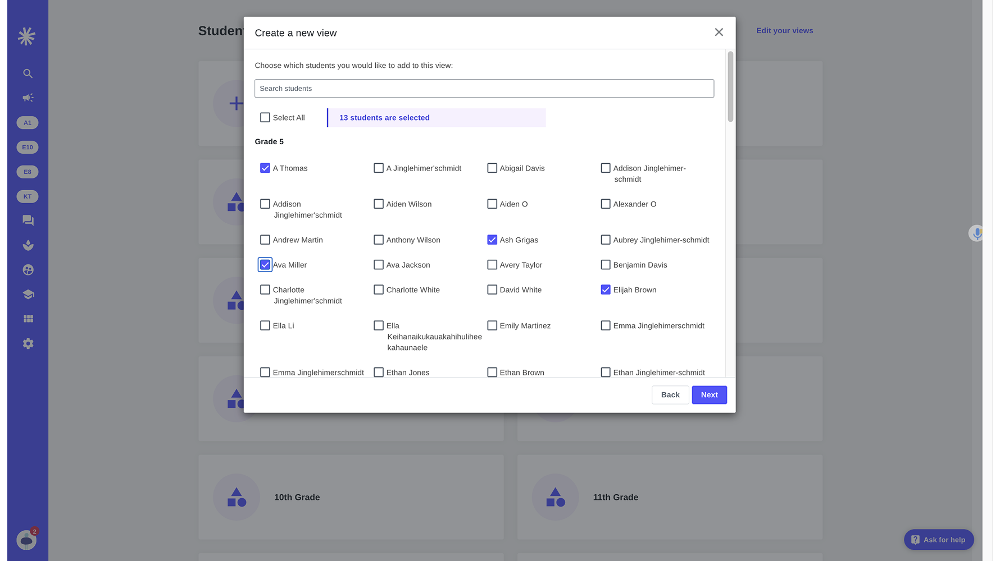
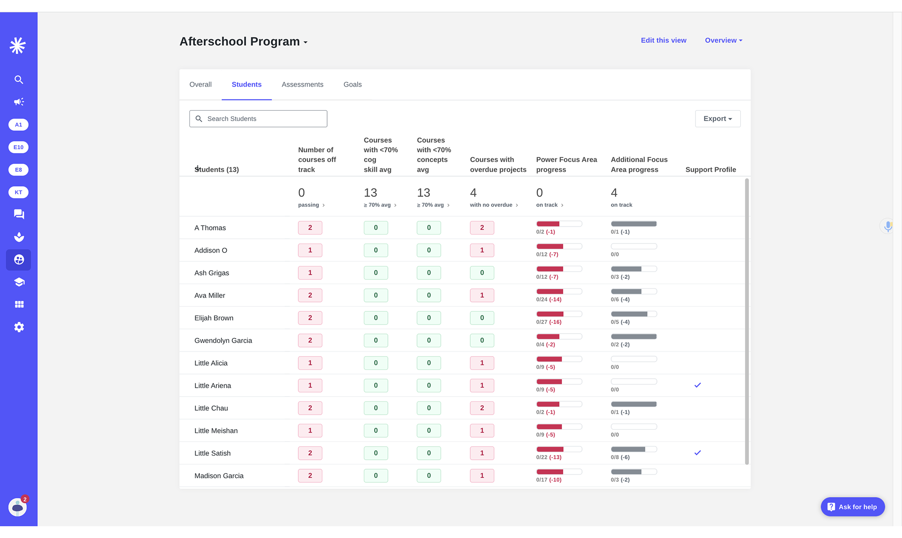
Project 2: Back to School Dashboard
I also led the design of Launch Metrics, a dashboard built around one insight: what happens in the first few weeks of school predicts the rest of the year. High early-year engagement from teachers and students correlates with better outcomes across the board.
The challenge was surfacing that signal fast enough to act on it. I worked with research, data science, and our school partnerships team to identify the metrics that mattered most during launch, then designed a dashboard that gave school leaders visibility into teacher and student progress while there was still time to intervene.
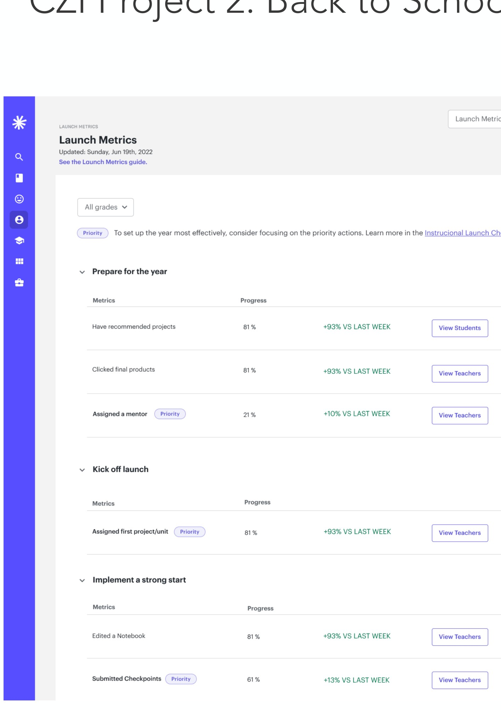
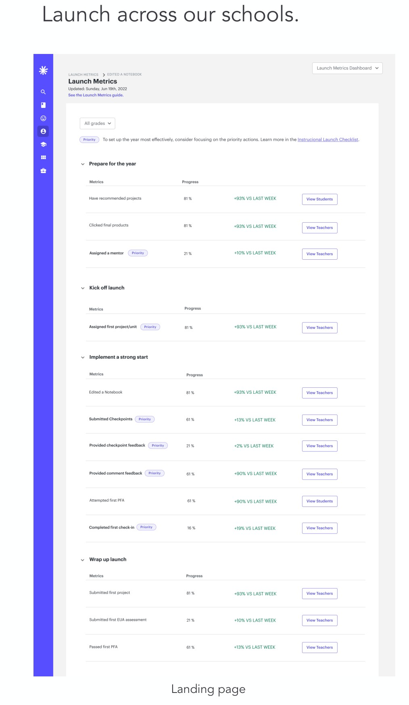
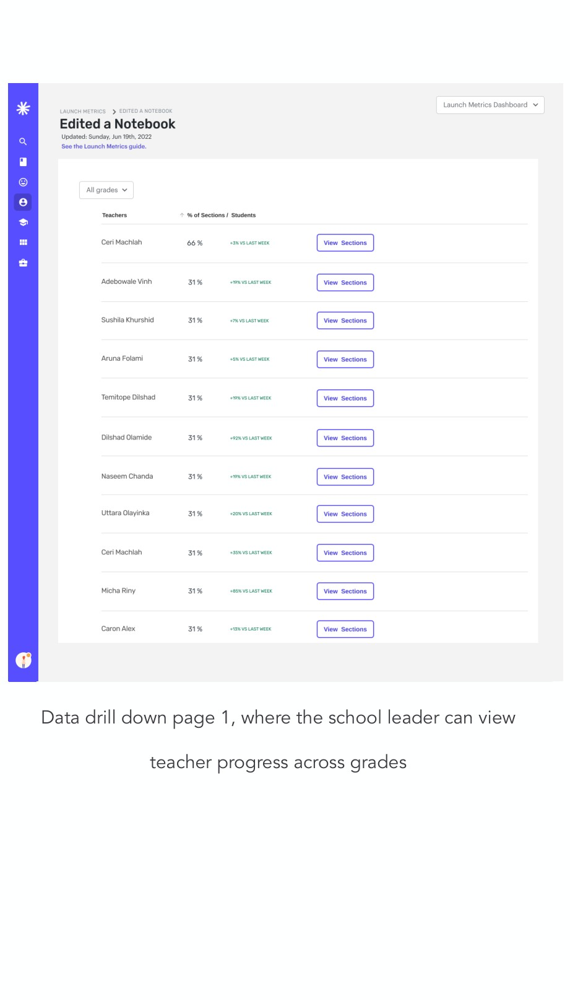
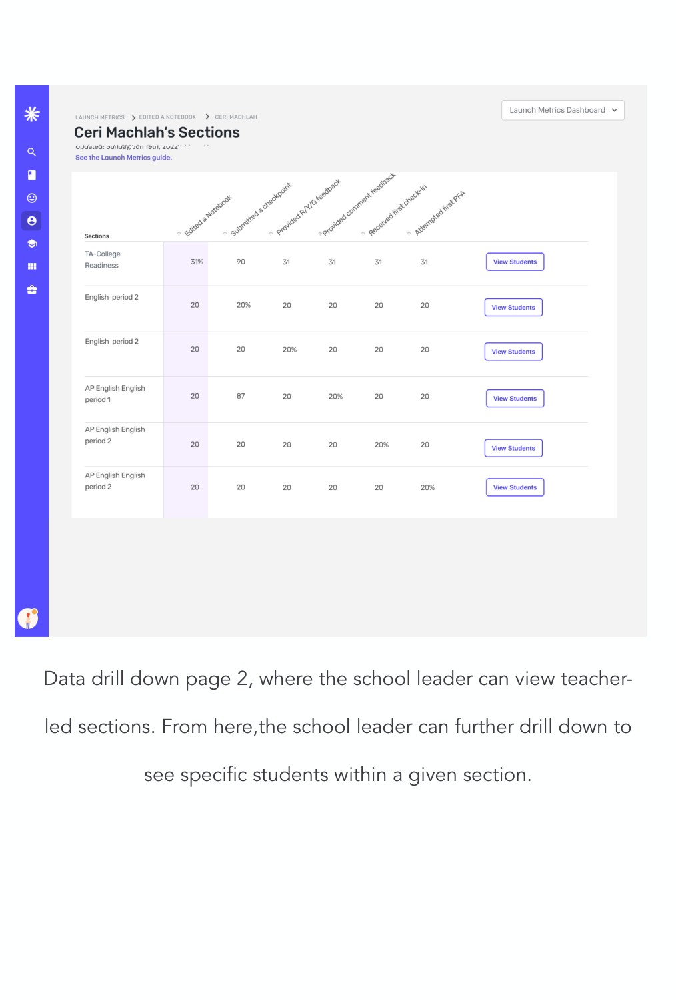
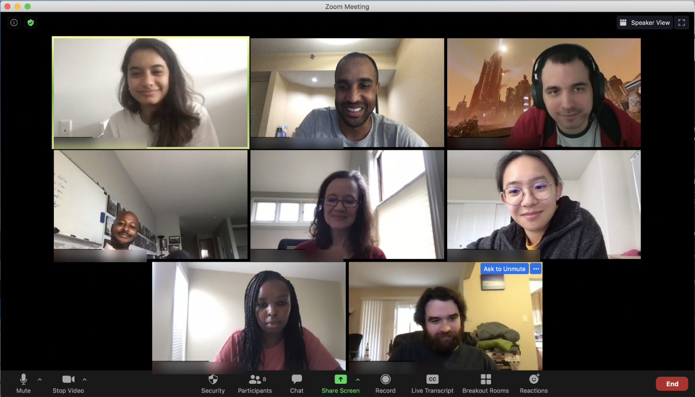
Team Culture & Leadership
Beyond product work, I shaped how the team worked together. I ran our retrospectives and organized cross-functional design critiques, creating space for honest feedback and creative exchange. I also led critiques with teams across the organization, helping raise design standards and build stronger collaboration between product, engineering, and research.
What I Learned
Three years at CZI taught me that data products fail when they assume expertise. School leaders had the data all along. What they lacked was an interface that did the interpretation for them. Meaningful color, trend chips, inline tooltips: these were the product.
The deeper lesson was about pace. The unglamorous work (renaming metrics, fixing labels, building shared language) created the credibility that made the bigger redesign possible.
Along Mentoring Tool
Designing a relationship-building tool that helps teachers and students connect through structured reflection prompts.
Mediation Response Unit
Designing a national toolkit to help communities respond to conflict with mediation instead of police.
Interpublic Group
Bringing collective intelligence to executive decision-making at a global advertising holding company operating in over 130 countries.
XQ Institute
Architecting a national movement to rethink America's high schools. 26 million viewers, 2x supporter growth overnight.